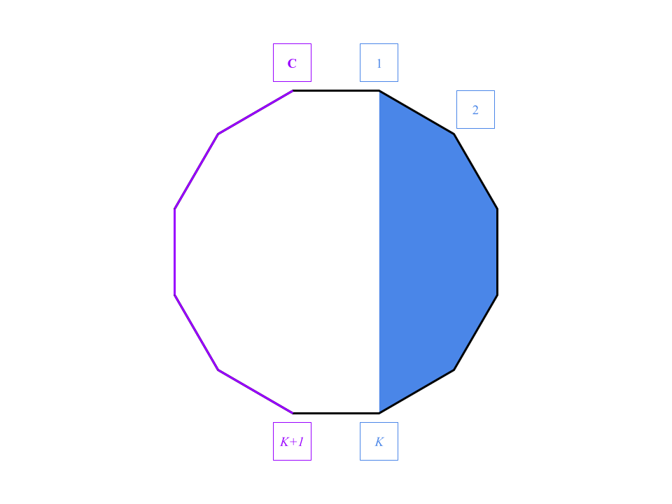
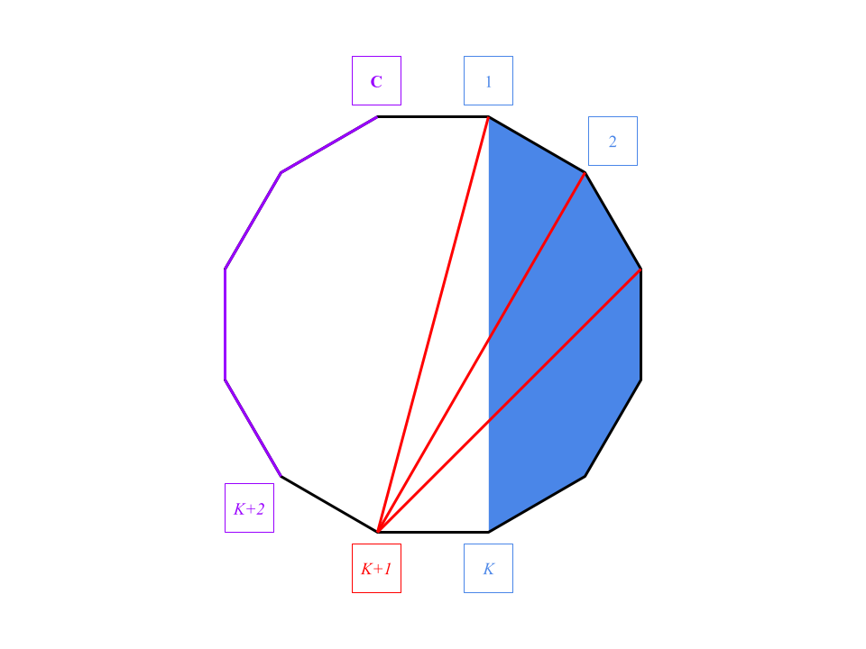

For each testcase in this interactive problem, we are first given two integers $$$\mathbf{C}$$$ and $$$\mathbf{L}$$$. First we send the judge a design, $$$G$$$, that contains exactly $$$\mathbf{C}$$$ computers and $$$\mathbf{L}$$$ links, then the judge sends back another design $$$H$$$ which is almost identical to the previous design $$$G$$$, except that the IDs are randomly permuted. At the end, we are required to find out a ring on $$$H$$$.
However, it's difficult to efficiently find out a ring on an arbitrary design. It's actually equivalent to the Hamiltonian cycle problem , and currently there's no efficient solution for it yet.
Thankfully, we don't need to do that in this problem. We can construct $$$G$$$ in such a way that finding a ring of $$$H$$$ is easier. There are several heuristics to do so, such as:
We might need to combine these heuristics to build a complete strategy that applies to all possible $$$\mathbf{C}$$$, $$$\mathbf{L}$$$.
The IDs in $$$H$$$ are randomly permuted, which become meaningless to us. Afterward in this analysis, the ID of a computer refers to the one in $$$G$$$, that is, the ID before shuffled.
In the following approaches, we first add the links $$$(1, 2), (2, 3), ..., (\mathbf{C}-1, C), (\mathbf{C}, 1)$$$ to form a ring $$$R$$$. Then, we add the remaining links apart from $$$R$$$ to fulfill the link number limit $$$\mathbf{L}$$$.
Let's define the degree of computer $$$i$$$, or $$$deg(i)$$$, to be the number of neighbors of computer $$$i$$$. It is an important property of a computer in this problem, because it remains invariant after the ID permuted.
In this test set, the number of links is at most $$$(C + 10)$$$. Apart from the ring $$$R$$$, there are at most $$$10$$$ links remaining.
When $$$\mathbf{C}$$$ is large enough ($$$>12$$$), we can put the extra links in such a way that allow us to efficiently find a ring in $$$H$$$. Otherwise, $$$\mathbf{C}$$$ is suffiently small ($$$\leq 12$$$) that we could find a ring in $$$H$$$ by brute-force. These two different approaches are explained in detail in the following sections.
We could add the links in the order $$$(1, 3), (1, 4), (1, 5), ...$$$. There are at most $$$10$$$ remaining links, so the last link we add is at most $$$(1, 12)$$$. In this case, $$$\mathbf{C}>12$$$, so all of these links $$$(1, 3), (1, 4), ..., (1, 12)$$$ are not in $$$R$$$.
All extra links are added on computer $$$1$$$, so computer $$$1$$$ has the greatest degree among all computers. This helps us to identify the computer $$$1$$$ in $$$H$$$.
Then, we ignore the computer $$$1$$$ and all the links on it. The rest part in $$$H$$$ are the links $$$(2, 3), (3, 4), ..., (\mathbf{C}-1, \mathbf{C})$$$. Combine these links with computer $$$1$$$, then the ring $$$R$$$ is reconstructed.
In this case, $$$\mathbf{C}$$$ is small enough for most of the brute-force approaches.
We can add the remaining $$$10$$$ links arbitrarily, and find a ring via plain backtracking, or the $$$O(\mathbf{C}^2\times 2^{\mathbf{C}})$$$-time algorithm for Hamiltonian cycle.
We add the remaining links in the order
$$$(1, 2), $$$
$$$(1, 3), (2, 3), $$$
$$$(1, 4), (2, 4), (3, 4), $$$
...,
$$$(1, \mathbf{C}), (2, \mathbf{C}), (3, \mathbf{C}), ..., (\mathbf{C}-1, \mathbf{C})$$$
if it's not in the ring $$$R$$$ yet, until we put $$$\mathbf{L}$$$ links in total.
Let the row $$$(1, k), (2, k), ..., (k-1, k)$$$ be the row $$$k$$$. Note that the last link in each rows is aready in the ring $$$R$$$, and so do the first link in row $$$\mathbf{C}$$$. These links are only listed to clarify the order.
Let row $$$K$$$ be the last row that are completely added to $$$G$$$, then each pair of computers among $$$1..K$$$ is directly connected with a link.
A clique is a set of computers such that each pair of computers among them is directly connected with a link. In this case, computers $$$1..K$$$ form a clique of size $$$K$$$.
Let's handle the edge cases $$$K \leq 3$$$ and $$$K \geq \mathbf{C}-1$$$ separately first.
Afterward in this analysis,, $$$3 \lt K \lt \mathbf{C} - 1$$$.
If no extra links from the next row $$$(K+1)$$$ were added to $$$G$$$, that is, the last link is $$$(K-2, K)$$$, then things are simpler.

Let's call computers $$$1..K$$$ the clique part, and computers $$$(K+1)..\mathbf{C}$$$ the ring part.
In $$$H$$$, we can classify the computers into the clique part and the ring part by their degrees.
In the ring part, the only links on the computers are the links in the ring $$$R$$$, so the degrees of them are all $$$2$$$. On the other hand, if the degree of a computer is greater than $$$2$$$, then it's in the clique part.
(Actually that's why we handled the case $$$K=3$$$ beforehand. When $$$K=3$$$, the degree of computer $$$2$$$ is also $$$2$$$, but it belongs to the clique part. This kind of confusion won't happen when $$$K>3$$$.)
Then, we can identify computer $$$1$$$ and computer $$$K$$$ from the clique part, since they are the only computers that connected with the ring part.
Though we can't tell which one is computer $$$1$$$ and which one is computer $$$K$$$, we can start from either of them, pass along the ring part to the other, pass through the rest of the clique part in any order, and go back to the starting computer.
The resulting ring is one of the following.
Now let's handle the complicated case. Part but not all computers in the next row $$$(K+1)$$$ are added to $$$G$$$. Since the link $$$(K, K+1)$$$ is already in the ring $$$R$$$, the last added link cannot be $$$(K-1, K+1)$$$, otherwise the row $$$(K+1)$$$ is completely added.

In this case, we have the clique part $$$1..K$$$, the ring part $$$(K+2)..\mathbf{C}$$$, and a special computer $$$(K+1)$$$.
The degrees of the computers in the ring part are still all $$$2$$$, so we can identify the ring part in $$$H$$$.
Among the computers not in the ring part, computers $$$1$$$ and $$$(K+1)$$$ are the only computers that connect with the ring part.
Though we can't tell which one is computer $$$1$$$ and which one is $$$(K+1)$$$, the following difference helps us to distinguish the two.Now we are able to identify the clique part, the ring part, and the special computer $$$(K+1)$$$, so we can obtain a ring using the same approach as the previous case.